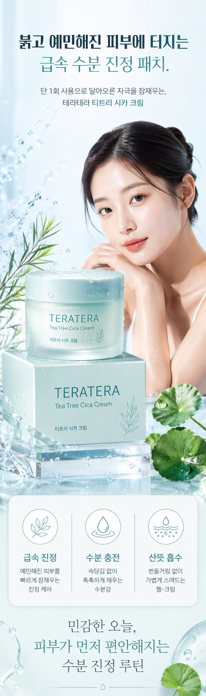
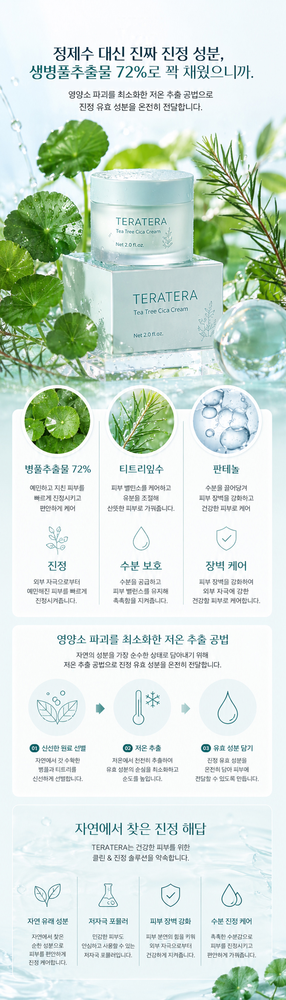
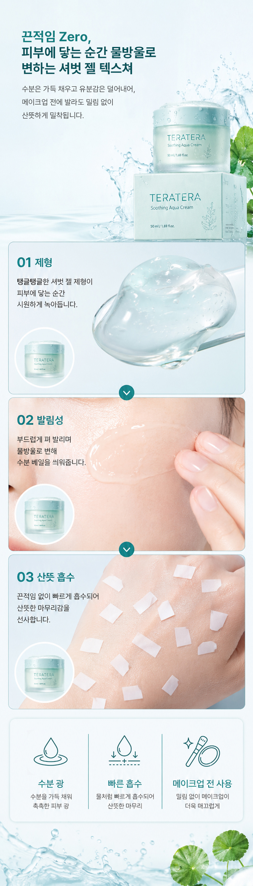
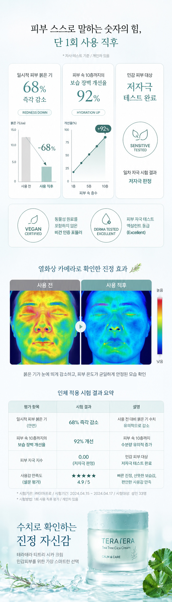
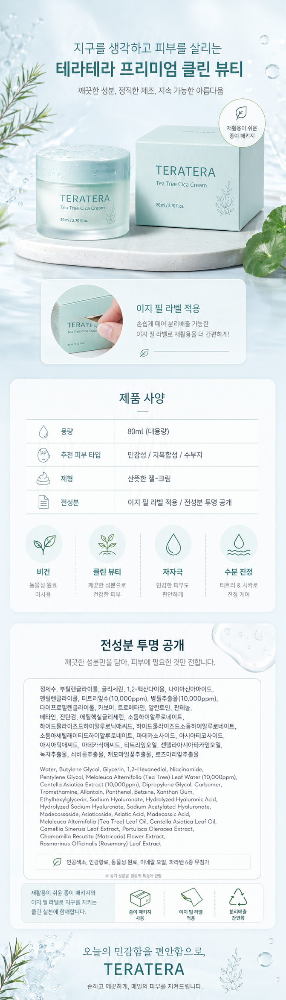

Detail Page
코스메틱 상세페이지
Photoshop · AI 이미지 활용





프로젝트 소개
민감성 피부를 위한 진정 크림 "테라테라 티트리 시카크림"의 상세페이지입니다. 예민해진 피부 고민에 공감하는 도입부터 성분·효능 설명, 임상 테스트 결과, 제품 사양까지 구매 결정에 필요한 정보를 순서대로 배치했습니다.
작업 포인트
- 피부 고민 공감 → 해결책 제시 → 성분 근거 → 신뢰 지표(임상 결과) → 제품 정보 순으로 설득 흐름을 설계했습니다.
- 붉은기 감소율, 보습 개선율 등 수치 데이터를 그래프와 인포그래픽으로 시각화해 신뢰도를 높였습니다.
- 민감 피부에 맞는 저채도 민트·블루 톤을 일관되게 사용해 진정 케어 컨셉을 강조했습니다.